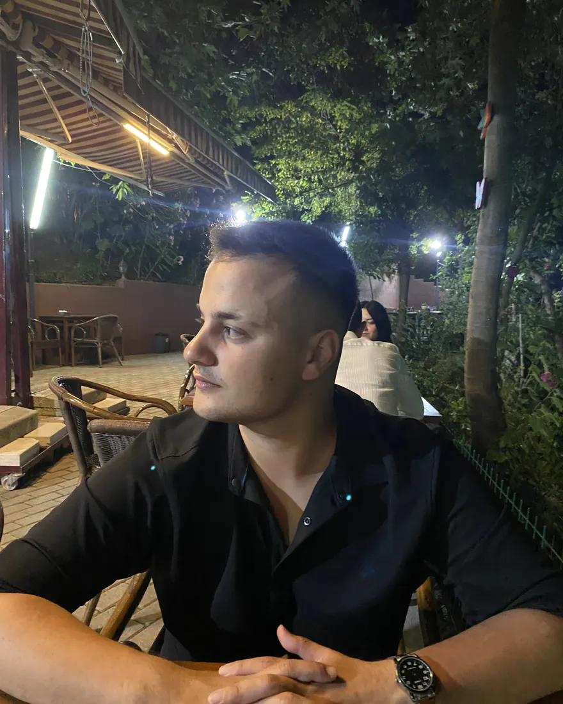
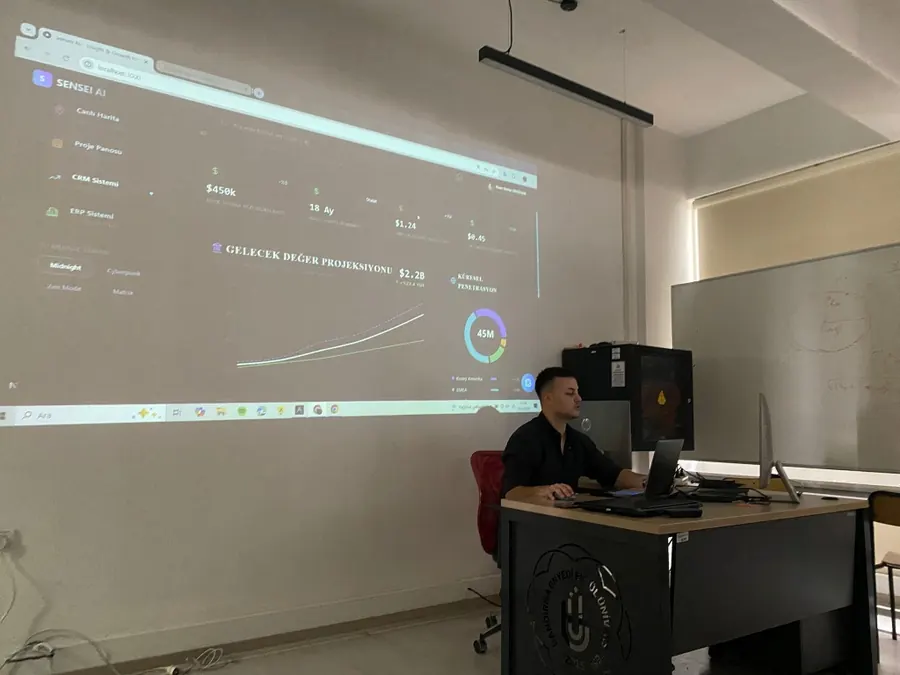
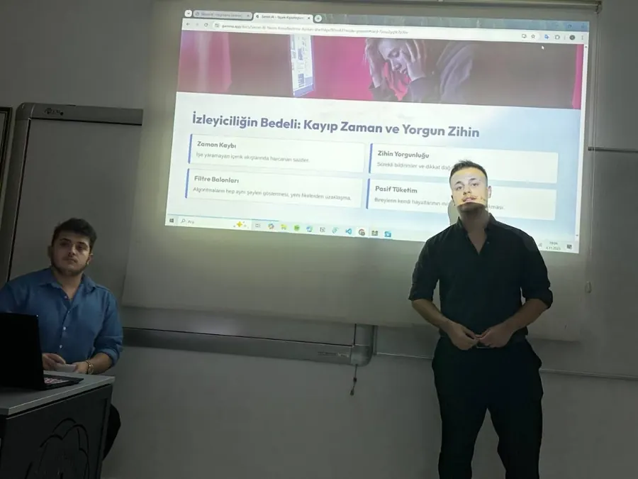
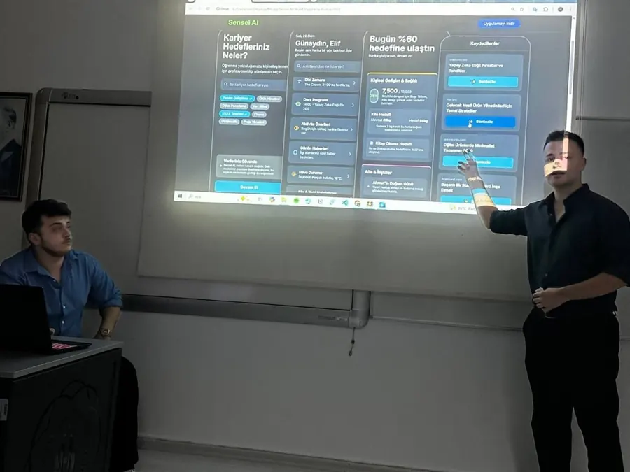

Data Science · Decision Intelligence · Software
Nihat Kütükoğlu
Gerçek verilerden analitik ürünlere.
Veriyi analiz eden, modeller geliştiren ve sonuçları kullanılabilir dijital ürünlere dönüştüren projeler geliştiriyorum.

50+GitHub deposu
4uçtan uca veri ürünü
116.640analiz edilen göç akışı (TÜİK)
Gerçekkamu & açık veri kaynakları
Featured Work
Öne çıkan projeler
Gerçek kamu ve açık veri kaynakları üzerinde kurulmuş, analizden modele ve kullanılabilir arayüze kadar giden uçtan uca çalışmalar.
Hakkımda
Kısaca
Bandırma Onyedi Eylül Üniversitesi Yönetim Bilişim Sistemleri öğrencisiyim. Çalışmalarımın odağı veri bilimi, makine öğrenmesi ve karar destek sistemleri: kamuya açık veri setlerini doğrulayıp analiz ediyor, model kuruyor ve sonucu karar vericinin kullanabileceği bir arayüze taşıyorum.
Aynı zamanda .NET/C# ve modern web teknolojileriyle yazılım geliştiriyorum. Bu ikisinin kesişimi benim için önemli: bir analiz ancak çalışan bir ürüne dönüştüğünde işe yarıyor. Model sınırlılıklarını gizlemek yerine raporlamayı, tekrar üretilebilir pipeline'lar kurmayı ve veri kalitesini açıkça belgelemeyi çalışma biçimimin parçası sayıyorum.
- Konum
- Balıkesir / Bandırma
- Eğitim
- Yönetim Bilişim Sistemleri (lisans, devam ediyor)
- Odak
- Data Science · Machine Learning · Decision Support · Software
Tech Stack
Yetenekler
Projelerde fiilen kullandığım araç ve yöntemler.
Machine Learning
Data Visualization
Data & BI
Software
Applied AI
Deneyim
Çalışma geçmişi
Agartha Teknoloji
- .NET ve C# ile kurumsal yazılım mimarileri ve servislerin geliştirilmesine katkı.
- İlişkisel veritabanlarında SQL optimizasyonu, veri modelleme ve veri yönetimi.
- Sistem verilerinin analizi ve analitik raporlamanın mimariye entegrasyonu.
- Clean Code prensipleri ve Agile/Scrum akışında takım çalışması.
TekNova
- KOBİ, esnaf ve bireysel müşteriler için web sitesi ve dijital tanıtım çözümleri.
- İhtiyaç analizi, tasarım, geliştirme ve yayınlama süreçlerinin uçtan uca yönetimi.
- Google Maps görünürlüğü, rakip ve yorum analizleriyle işletme raporlaması.
TNC Group Şirketleri
- SQL ve veritabanı yönetimi süreçlerine katılım.
- Veri doğrulama ve sorgulama işlemlerinde teknik destek.
- İş zekâsı projelerinde Python ile analiz ve raporlama desteği.
Auto King
- Kurumsal ERP/CRM sistemlerinde operasyonel veri girişi.
- Günlük iş emirlerinin sistem üzerinden takibi, raporlanması ve birimler arası koordinasyon.
More Projects
Labs & Research
Daha küçük ölçekli analiz, model ve veri seti çalışmaları.
Web & Product Development
Web projeleri
Müşteri işleri, işletme siteleri ve dijital ürün prototipleri.
Eğitim
Eğitim
Lisans · Devam ediyor
Yönetim Bilişim Sistemleri
Bandırma Onyedi Eylül Üniversitesi
Önlisans · Devam ediyor
Tıbbi Dokümantasyon ve Sekreterlik
Anadolu Üniversitesi
Sertifikalar
Sertifikalar & eğitimler
- Veri Bilimi ve Makine Öğrenmesi 2026: 100 Günlük KampAtıl Samancıoğlu · Academy Club
- Python Dilini Öğrenin: Sıfırdan İleri DüzeyTuncay Erol
- Microsoft Power BI · Power Query, Power Pivot, DAXOğuzhan Çolak
- Alıştırmalarla SQL ÖğreniyorumÖmer Çolakoğlu
- Sorgularla Adım Adım SQL Veritabanı ProgramlamaMurat Yücedağ
- HTML 101 & 201: Web Programlama TemelleriTurkcell Geleceği Yazanlar
- Endüstri 4.0 ve IIoT GüvenliğiCFE Certification
- İhracatta Hedef Pazar TespitiM. Arda Uzun
- ERP'yi Öğren Geleceği Yönet KonferansıBANÜ-YBS Topluluğu
- CYBERSHIELD: Siber Güvenlik ve Bilgi GüvenliğiBANÜ-YBS Topluluğu



İletişim
Birlikte çalışalım
Veri analizi, makine öğrenmesi, karar destek ve yazılım projeleri için yazabilirsiniz.